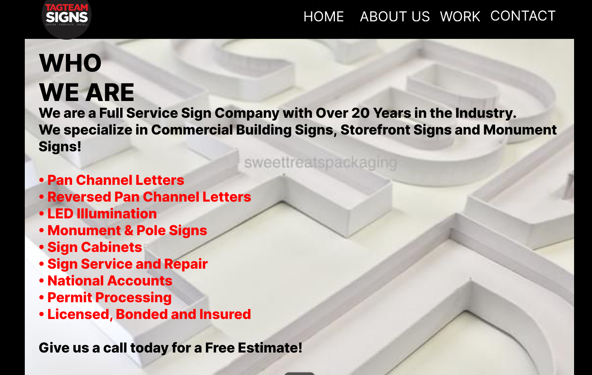
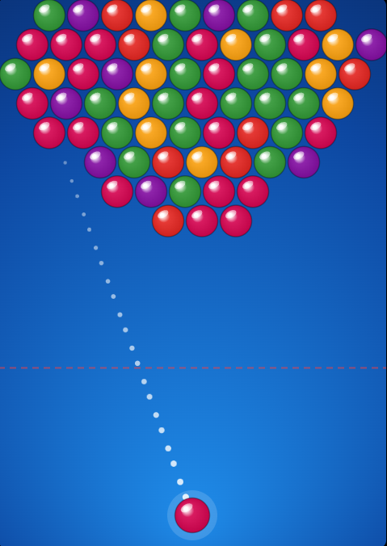
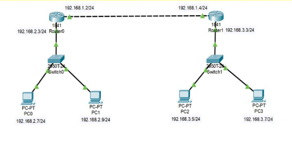

PROJECT / 01FIGMA
FIGMA
FIGMA
STUDENT PORTFOLIO / BSIT · 4TH YEAR
Hi, I'm Angelmark Quilatan, a fourth-year Bachelor of Science in Information Technology (BSIT) student. I'm developing my web design skills with HTML and CSS and sharing my portfolio work here.
01 <main>
02 <h1>
03 Angelmark Quilatan
04 </h1>
05 <p>
06 BSIT · 4th Year
07 </p>
08 </main>
01 / ABOUT ME
I'm Angelmark Quilatan, a fourth-year BSIT student at Cebu Eastern College, learning and practicing front-end web development.
This portfolio presents my current skills in HTML and CSS and gives me a place to share my work. As I continue learning, I'll add project details and examples that show what I built and what I learned from the process.
CEBU EASTERN COLLEGE
02 / SKILLS
Current skills listed from the information provided. Add other skills only if you have learned or practiced them.
HTML (HyperText Markup Language) builds the structure of a webpage, including headings, paragraphs, images, links, and sections.
CSS (Cascading Style Sheets) controls the appearance of a webpage, including colors, fonts, spacing, layouts, and responsive design.
JavaScript adds interactive features to webpages, such as menu buttons, responding to clicks, and updating content.
The bars are decorative, not measured ratings. Change or remove them if they don't accurately represent your skill level.
03 / PROJECTS
Your portfolio is listed as a project. Replace the prompts below with the actual project description, screenshots, contribution, and live link when available.

PROJECT / 01FIGMA
FIGMA

PROJECT / 02BROWSER GAME
A bubble-shooting game where players aim and match colored bubbles.

PROJECT / 03WEB SERVER PROJECT
A networking and web-server learning project exploring static and dynamic websites and how devices connect across a network.
NOTE Use your own screenshots, explain your own contribution, and remove placeholders you don't need. Do not claim a live link until the site is published.
04 / CONTACT
✳For school or project inquiries, feel free to contact me by email.
angelmarkquilatan@gmail.com ↗Address: San Isidro, Quiot, Cebu City